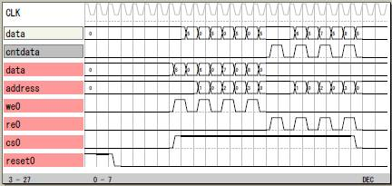
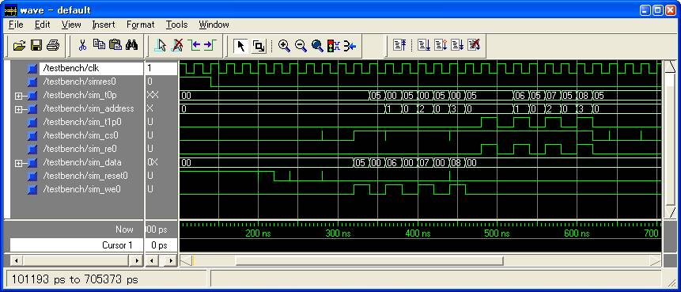
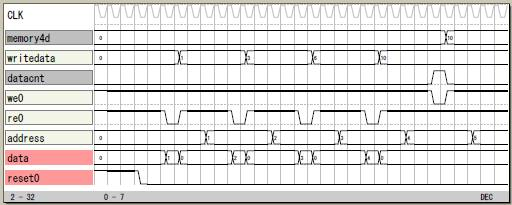

メモリ
4バイトメモリ
アドレスは0から3、データは8ビットのリセットの付いた
メモリです。

論理譜
logicname yahoo17
entity main
input reset;
input cs;
input re;
input we;
input address[2];
inout data[8];
bitn indata[8];
bitn outdata[8];
bitn cntdata;
bitr memory0p[8];
bitr memory1p[8];
bitr memory2p[8];
bitr memory3p[8];
output T0P[8]; T0P=outdata;
output T1P; T1P=cntdata;
enable(data,indata,outdata,cntdata)
cntdata=cs&re;
if (reset)
memory0p=0;
else
if (cs&we)
if (address==0)
memory0p=indata;
else
memory0p=memory0p;
endif
else
memory0p=memory0p;
endif
endif
if (reset)
memory1p=0;
else
if (cs&we)
if (address==1)
memory1p=indata;
else
memory1p=memory1p;
endif
else
memory1p=memory1p;
endif
endif
if (reset)
memory2p=0;
else
if (cs&we)
if (address==2)
memory2p=indata;
else
memory2p=memory2p;
endif
else
memory2p=memory2p;
endif
endif
if (reset)
memory3p=0;
else
if (cs&we)
if (address==3)
memory3p=indata;
else
memory3p=memory3p;
endif
else
memory3p=memory3p;
endif
endif
switch(address)
case 0: outdata=memory0p;
case 1: outdata=memory1p;
case 2: outdata=memory2p;
case 3: outdata=memory3p;
endswitch
ende
entity sim
output reset;
output cs;
output re;
output we;
output address[2];
output data[8];
bitr tc[8];
part main(reset,cs,re,we,address,data)
tc=tc+1;
if (tc<5) reset=1; endif
if ((tc>=10)&(tc<=24)) cs=1; endif
switch(tc)
case 10: we=1; address=0; data=5;
case 12: we=1; address=1; data=6;
case 14: we=1; address=2; data=7;
case 16: we=1; address=3; data=8;
case 18: re=1; address=0;
case 20: re=1; address=1;
case 22: re=1; address=2;
case 24: re=1; address=3;
endswitch
ende
endlogic
ModelSim上での実行
4バイトメモリをModelSIMで動かしてみます。
yahoo17 の機能実行譜に初期化を追加しています。
VHDLの機能実行譜が e1.vhd にテストベンチが s1.vhd
にできます。
これをModelSIMで実行します。

論理譜
logicname yahoo18
entity main
input reset;
input cs;
input re;
input we;
input address[2];
inout data[8];
bitn indata[8];
bitn outdata[8];
bitn cntdata;
bitr memory0p[8];
bitr memory1p[8];
bitr memory2p[8];
bitr memory3p[8];
output T0P[8]; T0P=outdata;
output T1P; T1P=cntdata;
enable(data,indata,outdata,cntdata)
cntdata=cs&re;
if (reset)
memory0p=0;
else
if (cs&we)
if (address==0)
memory0p=indata;
else
memory0p=memory0p;
endif
else
memory0p=memory0p;
endif
endif
if (reset)
memory1p=0;
else
if (cs&we)
if (address==1)
memory1p=indata;
else
memory1p=memory1p;
endif
else
memory1p=memory1p;
endif
endif
if (reset)
memory2p=0;
else
if (cs&we)
if (address==2)
memory2p=indata;
else
memory2p=memory2p;
endif
else
memory2p=memory2p;
endif
endif
if (reset)
memory3p=0;
else
if (cs&we)
if (address==3)
memory3p=indata;
else
memory3p=memory3p;
endif
else
memory3p=memory3p;
endif
endif
switch(address)
case 0: outdata=memory0p;
case 1: outdata=memory1p;
case 2: outdata=memory2p;
case 3: outdata=memory3p;
endswitch
ende
entity sim
output reset;
output cs;
output re;
output we;
output address[2];
output data[8];
input simres;
bitr tc[8];
part main(reset,cs,re,we,address,data)
if (!simres) tc=tc+1; endif
if (tc<5) reset=1; endif
if ((tc>=10)&(tc<=24)) cs=1; endif
switch(tc)
case 10: we=1; address=0; data=5;
case 12: we=1; address=1; data=6;
case 14: we=1; address=2; data=7;
case 16: we=1; address=3; data=8;
case 18: re=1; address=0;
case 20: re=1; address=1;
case 22: re=1; address=2;
case 24: re=1; address=3;
endswitch
ende
endlogic
VHDL機能実行譜
library IEEE;
use IEEE.std_logic_1164.all;
entity sim is
port(clk : in std_logic;
sim_T0P0 : out std_logic;
sim_address0 : out std_logic;
sim_address1 : out std_logic;
sim_T0P1 : out std_logic;
sim_T0P2 : out std_logic;
sim_T0P3 : out std_logic;
sim_T0P4 : out std_logic;
sim_T0P5 : out std_logic;
sim_T0P6 : out std_logic;
sim_T0P7 : out std_logic;
sim_T1P0 : out std_logic;
sim_cs0 : out std_logic;
sim_re0 : out std_logic;
sim_data0 : out std_logic;
sim_reset0 : out std_logic;
sim_we0 : out std_logic;
sim_data1 : out std_logic;
sim_data2 : out std_logic;
sim_data3 : out std_logic;
sim_data4 : out std_logic;
sim_data5 : out std_logic;
sim_data6 : out std_logic;
sim_data7 : out std_logic;
simres0 : in std_logic);
end sim;
architecture RTL of sim is
signal n_n35 : std_logic ;
signal n_n44 : std_logic ;
signal n_n53 : std_logic ;
signal n_n62 : std_logic ;
signal n_n36 : std_logic ;
signal n_n45 : std_logic ;
signal n_n54 : std_logic ;
signal n_n63 : std_logic ;
signal n_n37 : std_logic ;
signal n_n46 : std_logic ;
signal n_n55 : std_logic ;
signal n_n64 : std_logic ;
signal n_n38 : std_logic ;
signal n_n47 : std_logic ;
signal n_n56 : std_logic ;
signal n_n65 : std_logic ;
signal n_n39 : std_logic ;
signal n_n48 : std_logic ;
signal n_n57 : std_logic ;
signal n_n66 : std_logic ;
signal n_n40 : std_logic ;
signal n_n49 : std_logic ;
signal n_n58 : std_logic ;
signal n_n67 : std_logic ;
signal n_n41 : std_logic ;
signal n_n50 : std_logic ;
signal n_n59 : std_logic ;
signal n_n68 : std_logic ;
signal n_n42 : std_logic ;
signal n_n51 : std_logic ;
signal n_n60 : std_logic ;
signal n_n69 : std_logic ;
signal n_n193 : std_logic ;
signal n_n194 : std_logic ;
signal n_n195 : std_logic ;
signal n_n196 : std_logic ;
signal n_n197 : std_logic ;
signal n_n198 : std_logic ;
signal n_n199 : std_logic ;
signal n_n200 : std_logic ;
signal n_n33 : std_logic ;
signal n_n99 : std_logic ;
signal n_n87 : std_logic ;
signal n_n117 : std_logic ;
signal n_n111 : std_logic ;
signal n_n106 : std_logic ;
signal n_n137 : std_logic ;
signal n_n130 : std_logic ;
signal n_n125 : std_logic ;
signal n_n155 : std_logic ;
signal n_n144 : std_logic ;
signal n_n209 : std_logic ;
signal n_n210 : std_logic ;
signal n_n211 : std_logic ;
signal n_n212 : std_logic ;
signal n_n213 : std_logic ;
signal n_n214 : std_logic ;
signal n_n226 : std_logic ;
signal n_n229 : std_logic ;
signal n_n232 : std_logic ;
signal n_n235 : std_logic ;
signal n_n237 : std_logic ;
signal n_n238 : std_logic ;
signal n_n240 : std_logic ;
signal n_n241 : std_logic ;
signal n_n243 : std_logic ;
signal n_n244 : std_logic ;
signal n_n260 : std_logic ;
signal n_n263 : std_logic ;
signal n_n265 : std_logic ;
signal n_n266 : std_logic ;
signal n_n268 : std_logic ;
signal n_n269 : std_logic ;
signal n_n271 : std_logic ;
signal n_n272 : std_logic ;
signal n_n274 : std_logic ;
signal n_n275 : std_logic ;
signal n_n277 : std_logic ;
signal n_n278 : std_logic ;
signal n_n251 : std_logic ;
signal n_n288 : std_logic ;
signal n_n291 : std_logic ;
signal n_n294 : std_logic ;
signal n_n296 : std_logic ;
signal n_n297 : std_logic ;
signal n_n299 : std_logic ;
signal n_n300 : std_logic ;
signal n_n302 : std_logic ;
signal n_n303 : std_logic ;
signal n_n305 : std_logic ;
signal T0P0 : std_logic ;
signal address0 : std_logic ;
signal address1 : std_logic ;
signal T0P1 : std_logic ;
signal T0P2 : std_logic ;
signal T0P3 : std_logic ;
signal T0P4 : std_logic ;
signal T0P5 : std_logic ;
signal T0P6 : std_logic ;
signal T0P7 : std_logic ;
signal T1P0 : std_logic ;
signal cs0 : std_logic ;
signal re0 : std_logic ;
signal data0 : std_logic ;
signal reset0 : std_logic ;
signal we0 : std_logic ;
signal data1 : std_logic ;
signal data2 : std_logic ;
signal data3 : std_logic ;
signal data4 : std_logic ;
signal data5 : std_logic ;
signal data6 : std_logic ;
signal data7 : std_logic ;
begin
process(clk) begin
if (clk' event and clk='1') then
n_n35 <= (data0 and not reset0 and cs0 and we0 and not n_n99)
or (n_n35 and not reset0 and cs0 and we0 and n_n99)
or (n_n35 and not reset0 and not n_n87) ;
n_n36 <= (data1 and not reset0 and cs0 and we0 and not n_n99)
or (n_n36 and not reset0 and cs0 and we0 and n_n99)
or (n_n36 and not reset0 and not n_n87) ;
n_n37 <= (data2 and not reset0 and cs0 and we0 and not n_n99)
or (n_n37 and not reset0 and cs0 and we0 and n_n99)
or (n_n37 and not reset0 and not n_n87) ;
n_n38 <= (data3 and not reset0 and cs0 and we0 and not n_n99)
or (n_n38 and not reset0 and cs0 and we0 and n_n99)
or (n_n38 and not reset0 and not n_n87) ;
n_n39 <= (data4 and not reset0 and cs0 and we0 and not n_n99)
or (n_n39 and not reset0 and cs0 and we0 and n_n99)
or (n_n39 and not reset0 and not n_n87) ;
n_n40 <= (data5 and not reset0 and cs0 and we0 and not n_n99)
or (n_n40 and not reset0 and cs0 and we0 and n_n99)
or (n_n40 and not reset0 and not n_n87) ;
n_n41 <= (data6 and not reset0 and cs0 and we0 and not n_n99)
or (n_n41 and not reset0 and cs0 and we0 and n_n99)
or (n_n41 and not reset0 and not n_n87) ;
n_n42 <= (data7 and not reset0 and cs0 and we0 and not n_n99)
or (n_n42 and not reset0 and cs0 and we0 and n_n99)
or (n_n42 and not reset0 and not n_n87) ;
n_n44 <= (data0 and not reset0 and cs0 and we0 and not n_n117 and not address1)
or (n_n44 and not reset0 and cs0 and we0 and not n_n111)
or (n_n44 and not reset0 and not n_n106) ;
n_n45 <= (data1 and not reset0 and cs0 and we0 and not n_n117 and not address1)
or (n_n45 and not reset0 and cs0 and we0 and not n_n111)
or (n_n45 and not reset0 and not n_n106) ;
n_n46 <= (data2 and not reset0 and cs0 and we0 and not n_n117 and not address1)
or (n_n46 and not reset0 and cs0 and we0 and not n_n111)
or (n_n46 and not reset0 and not n_n106) ;
n_n47 <= (data3 and not reset0 and cs0 and we0 and not n_n117 and not address1)
or (n_n47 and not reset0 and cs0 and we0 and not n_n111)
or (n_n47 and not reset0 and not n_n106) ;
n_n48 <= (data4 and not reset0 and cs0 and we0 and not n_n117 and not address1)
or (n_n48 and not reset0 and cs0 and we0 and not n_n111)
or (n_n48 and not reset0 and not n_n106) ;
n_n49 <= (data5 and not reset0 and cs0 and we0 and not n_n117 and not address1)
or (n_n49 and not reset0 and cs0 and we0 and not n_n111)
or (n_n49 and not reset0 and not n_n106) ;
n_n50 <= (data6 and not reset0 and cs0 and we0 and not n_n117 and not address1)
or (n_n50 and not reset0 and cs0 and we0 and not n_n111)
or (n_n50 and not reset0 and not n_n106) ;
n_n51 <= (data7 and not reset0 and cs0 and we0 and not n_n117 and not address1)
or (n_n51 and not reset0 and cs0 and we0 and not n_n111)
or (n_n51 and not reset0 and not n_n106) ;
n_n53 <= (data0 and not reset0 and cs0 and we0 and address1 and not n_n137)
or (n_n53 and not reset0 and cs0 and we0 and not n_n130)
or (n_n53 and not reset0 and not n_n125) ;
n_n54 <= (data1 and not reset0 and cs0 and we0 and address1 and not n_n137)
or (n_n54 and not reset0 and cs0 and we0 and not n_n130)
or (n_n54 and not reset0 and not n_n125) ;
n_n55 <= (data2 and not reset0 and cs0 and we0 and address1 and not n_n137)
or (n_n55 and not reset0 and cs0 and we0 and not n_n130)
or (n_n55 and not reset0 and not n_n125) ;
n_n56 <= (data3 and not reset0 and cs0 and we0 and address1 and not n_n137)
or (n_n56 and not reset0 and cs0 and we0 and not n_n130)
or (n_n56 and not reset0 and not n_n125) ;
n_n57 <= (data4 and not reset0 and cs0 and we0 and address1 and not n_n137)
or (n_n57 and not reset0 and cs0 and we0 and not n_n130)
or (n_n57 and not reset0 and not n_n125) ;
n_n58 <= (data5 and not reset0 and cs0 and we0 and address1 and not n_n137)
or (n_n58 and not reset0 and cs0 and we0 and not n_n130)
or (n_n58 and not reset0 and not n_n125) ;
n_n59 <= (data6 and not reset0 and cs0 and we0 and address1 and not n_n137)
or (n_n59 and not reset0 and cs0 and we0 and not n_n130)
or (n_n59 and not reset0 and not n_n125) ;
n_n60 <= (data7 and not reset0 and cs0 and we0 and address1 and not n_n137)
or (n_n60 and not reset0 and cs0 and we0 and not n_n130)
or (n_n60 and not reset0 and not n_n125) ;
n_n62 <= (data0 and not reset0 and cs0 and we0 and not n_n155)
or (n_n62 and not reset0 and cs0 and we0 and n_n155)
or (n_n62 and not reset0 and not n_n144) ;
n_n63 <= (data1 and not reset0 and cs0 and we0 and not n_n155)
or (n_n63 and not reset0 and cs0 and we0 and n_n155)
or (n_n63 and not reset0 and not n_n144) ;
n_n64 <= (data2 and not reset0 and cs0 and we0 and not n_n155)
or (n_n64 and not reset0 and cs0 and we0 and n_n155)
or (n_n64 and not reset0 and not n_n144) ;
n_n65 <= (data3 and not reset0 and cs0 and we0 and not n_n155)
or (n_n65 and not reset0 and cs0 and we0 and n_n155)
or (n_n65 and not reset0 and not n_n144) ;
n_n66 <= (data4 and not reset0 and cs0 and we0 and not n_n155)
or (n_n66 and not reset0 and cs0 and we0 and n_n155)
or (n_n66 and not reset0 and not n_n144) ;
n_n67 <= (data5 and not reset0 and cs0 and we0 and not n_n155)
or (n_n67 and not reset0 and cs0 and we0 and n_n155)
or (n_n67 and not reset0 and not n_n144) ;
n_n68 <= (data6 and not reset0 and cs0 and we0 and not n_n155)
or (n_n68 and not reset0 and cs0 and we0 and n_n155)
or (n_n68 and not reset0 and not n_n144) ;
n_n69 <= (data7 and not reset0 and cs0 and we0 and not n_n155)
or (n_n69 and not reset0 and cs0 and we0 and n_n155)
or (n_n69 and not reset0 and not n_n144) ;
n_n193 <= (not n_n193 and not simres0) ;
n_n194 <= (not n_n194 and n_n193 and not simres0)
or (n_n194 and not n_n193 and not simres0) ;
n_n195 <= (not n_n195 and n_n194 and n_n193 and not simres0)
or (n_n195 and not simres0 and not n_n209) ;
n_n196 <= (not n_n196 and n_n195 and n_n194 and n_n193 and not simres0)
or (n_n196 and not simres0 and not n_n210) ;
n_n197 <= (not n_n197 and n_n196 and n_n195 and n_n194 and n_n193 and not simres0)
or (n_n197 and not simres0 and not n_n211) ;
n_n198 <= (not n_n198 and n_n197 and n_n196 and n_n195 and n_n194 and n_n193 and not simres0)
or (n_n198 and not simres0 and not n_n212) ;
n_n199 <= (not n_n199 and n_n198 and n_n197 and n_n196 and n_n195 and n_n194 and n_n193 and not simres0)
or (n_n199 and not simres0 and not n_n213) ;
n_n200 <= (not n_n200 and n_n199 and n_n198 and n_n197 and n_n196 and n_n195 and n_n194 and n_n193 and not simres0)
or (n_n200 and not simres0 and not n_n214) ;
end if;
end process;
T0P0 <= (n_n35 and not address0 and not address1)
or (address0 and not address1 and n_n44)
or (not address0 and address1 and n_n53)
or (address0 and address1 and n_n62) ;
T0P1 <= (n_n36 and not address0 and not address1)
or (address0 and not address1 and n_n45)
or (not address0 and address1 and n_n54)
or (address0 and address1 and n_n63) ;
T0P2 <= (n_n37 and not address0 and not address1)
or (address0 and not address1 and n_n46)
or (not address0 and address1 and n_n55)
or (address0 and address1 and n_n64) ;
T0P3 <= (n_n38 and not address0 and not address1)
or (address0 and not address1 and n_n47)
or (not address0 and address1 and n_n56)
or (address0 and address1 and n_n65) ;
T0P4 <= (n_n39 and not address0 and not address1)
or (address0 and not address1 and n_n48)
or (not address0 and address1 and n_n57)
or (address0 and address1 and n_n66) ;
T0P5 <= (n_n40 and not address0 and not address1)
or (address0 and not address1 and n_n49)
or (not address0 and address1 and n_n58)
or (address0 and address1 and n_n67) ;
T0P6 <= (n_n41 and not address0 and not address1)
or (address0 and not address1 and n_n50)
or (not address0 and address1 and n_n59)
or (address0 and address1 and n_n68) ;
T0P7 <= (n_n42 and not address0 and not address1)
or (address0 and not address1 and n_n51)
or (not address0 and address1 and n_n60)
or (address0 and address1 and n_n69) ;
T1P0 <= (cs0 and re0) ;
n_n33 <= (cs0 and re0) ;
n_n87 <= (cs0 and we0) ;
n_n99 <= (address0)
or (address1) ;
n_n106 <= (cs0 and we0) ;
n_n117 <= (not address1 and not address0) ;
n_n111 <= (not n_n117 and not address1) ;
n_n125 <= (cs0 and we0) ;
n_n137 <= (address1 and address0) ;
n_n130 <= (address1 and not n_n137) ;
n_n144 <= (cs0 and we0) ;
n_n155 <= (address1 and not address0)
or (not address1) ;
n_n209 <= (n_n194 and n_n193 and not simres0) ;
n_n210 <= (n_n195 and n_n194 and n_n193 and not simres0) ;
n_n211 <= (n_n196 and n_n195 and n_n194 and n_n193 and not simres0) ;
n_n212 <= (n_n197 and n_n196 and n_n195 and n_n194 and n_n193 and not simres0) ;
n_n213 <= (n_n198 and n_n197 and n_n196 and n_n195 and n_n194 and n_n193 and not simres0) ;
n_n214 <= (n_n199 and n_n198 and n_n197 and n_n196 and n_n195 and n_n194 and n_n193 and not simres0) ;
n_n226 <= (n_n199)
or (n_n200) ;
n_n229 <= (n_n198)
or (n_n226) ;
n_n232 <= (n_n197)
or (n_n229) ;
n_n235 <= (n_n196)
or (n_n232) ;
n_n237 <= (not n_n235 and not n_n195) ;
n_n238 <= (n_n196)
or (n_n232) ;
n_n240 <= (not n_n235 and not n_n195 and not n_n238) ;
n_n241 <= (not n_n237 and not n_n238 and n_n194)
or (not n_n237 and n_n235) ;
n_n243 <= (not n_n240 and not n_n241 and not n_n193)
or (not n_n241 and not n_n235 and not n_n195 and not n_n238) ;
n_n244 <= (not n_n240 and n_n241) ;
reset0 <= (n_n243 and not n_n244) ;
n_n260 <= (n_n199)
or (n_n200) ;
n_n263 <= (n_n198)
or (n_n260) ;
n_n265 <= (not n_n263 and not n_n197) ;
n_n266 <= (n_n198)
or (n_n260) ;
n_n268 <= (not n_n265 and not n_n266 and not n_n196)
or (not n_n266 and not n_n263 and not n_n197) ;
n_n269 <= (not n_n265 and n_n263) ;
n_n271 <= (n_n268 and not n_n269) ;
n_n272 <= (not n_n268 and not n_n269 and n_n195)
or (not n_n268 and not n_n265 and n_n263) ;
n_n274 <= (n_n268 and not n_n269 and not n_n272) ;
n_n275 <= (not n_n271 and not n_n272 and n_n194)
or (not n_n271 and n_n272) ;
n_n277 <= (n_n268 and not n_n269 and not n_n272 and not n_n275) ;
n_n278 <= (not n_n274 and not n_n275 and n_n193)
or (not n_n274 and n_n275) ;
n_n251 <= (n_n268 and not n_n269 and not n_n272 and not n_n275 and not n_n278)
or (not n_n278 and not n_n277) ;
n_n288 <= (n_n199)
or (n_n200) ;
n_n291 <= (n_n198)
or (n_n288) ;
n_n294 <= (n_n197)
or (n_n291) ;
n_n296 <= (not n_n294 and not n_n196) ;
n_n297 <= (n_n197)
or (n_n291) ;
n_n299 <= (not n_n294 and not n_n196 and not n_n297) ;
n_n300 <= (not n_n296 and not n_n297 and n_n195)
or (not n_n296 and n_n294) ;
n_n302 <= (not n_n299 and not n_n300 and not n_n194)
or (not n_n300 and not n_n294 and not n_n196 and not n_n297) ;
n_n303 <= (not n_n299 and n_n300) ;
n_n305 <= (n_n302 and not n_n303) ;
cs0 <= (not n_n305 and n_n251) ;
we0 <= (not n_n193 and not n_n194 and not n_n195 and not n_n196 and n_n197 and not n_n198 and not n_n199 and not n_n200)
or (not n_n193 and n_n194 and n_n196 and not n_n197 and not n_n198 and not n_n199 and not n_n200)
or (not n_n193 and n_n195 and n_n196 and not n_n197 and not n_n198 and not n_n199 and not n_n200) ;
address0 <= (not n_n193 and not n_n194 and n_n195 and n_n196 and not n_n197 and not n_n198 and not n_n199 and not n_n200)
or (not n_n193 and not n_n194 and not n_n196 and n_n197 and not n_n198 and not n_n199 and not n_n200)
or (not n_n193 and not n_n194 and not n_n195 and n_n197 and not n_n198 and not n_n199 and not n_n200) ;
address1 <= (not n_n193 and n_n194 and n_n195 and n_n196 and not n_n197 and not n_n198 and not n_n199 and not n_n200)
or (not n_n193 and n_n194 and n_n195 and not n_n196 and n_n197 and not n_n198 and not n_n199 and not n_n200)
or (not n_n193 and not n_n194 and not n_n195 and n_n197 and not n_n198 and not n_n199 and not n_n200) ;
data0 <= (not n_n193 and n_n194 and n_n196 and not n_n197 and not n_n198 and not n_n199 and not n_n200) ;
data1 <= (not n_n193 and n_n195 and n_n196 and not n_n197 and not n_n198 and not n_n199 and not n_n200) ;
data2 <= (not n_n193 and n_n194 and n_n196 and not n_n197 and not n_n198 and not n_n199 and not n_n200)
or (not n_n193 and n_n196 and not n_n197 and not n_n198 and not n_n199 and not n_n200 and n_n195) ;
data3 <= (not n_n193 and not n_n194 and not n_n195 and not n_n196 and n_n197 and not n_n198 and not n_n199 and not n_n200) ;
data4 <= ('0') ;
data5 <= ('0') ;
data6 <= ('0') ;
data7 <= ('0') ;
re0 <= (not n_n193 and not n_n194 and not n_n195 and n_n196 and n_n197 and not n_n198 and not n_n199 and not n_n200)
or (not n_n193 and n_n194 and not n_n196 and n_n197 and not n_n198 and not n_n199 and not n_n200)
or (not n_n193 and n_n195 and not n_n196 and n_n197 and not n_n198 and not n_n199 and not n_n200) ;
sim_T0P0 <= T0P0 ;
sim_address0 <= address0 ;
sim_address1 <= address1 ;
sim_T0P1 <= T0P1 ;
sim_T0P2 <= T0P2 ;
sim_T0P3 <= T0P3 ;
sim_T0P4 <= T0P4 ;
sim_T0P5 <= T0P5 ;
sim_T0P6 <= T0P6 ;
sim_T0P7 <= T0P7 ;
sim_T1P0 <= T1P0 ;
sim_cs0 <= cs0 ;
sim_re0 <= re0 ;
sim_data0 <= data0 ;
sim_reset0 <= reset0 ;
sim_we0 <= we0 ;
sim_data1 <= data1 ;
sim_data2 <= data2 ;
sim_data3 <= data3 ;
sim_data4 <= data4 ;
sim_data5 <= data5 ;
sim_data6 <= data6 ;
sim_data7 <= data7 ;
end RTL;
|
テストベンチ
library IEEE;
use IEEE.std_logic_1164.all;
entity TESTBENCH is
end TESTBENCH ;
architecture behavior of TESTBENCH is
component sim
port(clk : in std_logic;
sim_T0P0 : out std_logic;
sim_address0 : out std_logic;
sim_address1 : out std_logic;
sim_T0P1 : out std_logic;
sim_T0P2 : out std_logic;
sim_T0P3 : out std_logic;
sim_T0P4 : out std_logic;
sim_T0P5 : out std_logic;
sim_T0P6 : out std_logic;
sim_T0P7 : out std_logic;
sim_T1P0 : out std_logic;
sim_cs0 : out std_logic;
sim_re0 : out std_logic;
sim_data0 : out std_logic;
sim_reset0 : out std_logic;
sim_we0 : out std_logic;
sim_data1 : out std_logic;
sim_data2 : out std_logic;
sim_data3 : out std_logic;
sim_data4 : out std_logic;
sim_data5 : out std_logic;
sim_data6 : out std_logic;
sim_data7 : out std_logic;
simres0 : in std_logic);
end component ;
constant CLK_CYCLE : Time := 20 ns ;
signal clk : std_logic ;
signal simres0 : std_logic ;
signal sim_T0P : std_logic_vector(7 downto 0) ;
signal sim_address : std_logic_vector(1 downto 0) ;
signal sim_T1P0 : std_logic ;
signal sim_cs0 : std_logic ;
signal sim_re0 : std_logic ;
signal sim_data : std_logic_vector(7 downto 0) ;
signal sim_reset0 : std_logic ;
signal sim_we0 : std_logic ;
begin
unit : sim port map (
clk => clk,
sim_T0P0 => sim_T0P(0),
sim_address0 => sim_address(0),
sim_address1 => sim_address(1),
sim_T0P1 => sim_T0P(1),
sim_T0P2 => sim_T0P(2),
sim_T0P3 => sim_T0P(3),
sim_T0P4 => sim_T0P(4),
sim_T0P5 => sim_T0P(5),
sim_T0P6 => sim_T0P(6),
sim_T0P7 => sim_T0P(7),
sim_T1P0 => sim_T1P0,
sim_cs0 => sim_cs0,
sim_re0 => sim_re0,
sim_data0 => sim_data(0),
sim_reset0 => sim_reset0,
sim_we0 => sim_we0,
sim_data1 => sim_data(1),
sim_data2 => sim_data(2),
sim_data3 => sim_data(3),
sim_data4 => sim_data(4),
sim_data5 => sim_data(5),
sim_data6 => sim_data(6),
sim_data7 => sim_data(7),
simres0 => simres0);
process begin
clk <= '1';
wait for CLK_CYCLE/2;
clk <= '0';
wait for CLK_CYCLE/2;
end process;
process begin
simres0 <= '0';
wait for CLK_CYCLE*2;
simres0 <= '1';
wait for CLK_CYCLE*5;
simres0 <= '0';
wait for CLK_CYCLE*30;
end process;
end;
|
メモリ操作
番地0から3の4個のバイトデータを足し算して番地4に
結果を書き込みます。
機能実行譜では双方向信号の値が読めないので別途
writedata に取り出しています。
チップ化の際にはこの信号とテスト信号は不要です。
メモリを操作する論理を作ったときに機能実行譜に
メモリの役割をさせる簡単な実例です。

論理譜
logicname yahoo32
entity main
input reset;
inout data[8];
output address[8];
output re;
output we;
output writedata[8]; { 機能実行譜のための dataout の引き出し }
bitn datain[8];
bitn dataout[8];
bitn datacnt;
bitr count[8];
bitr wc[3];
bitr acc[8];
bitn read;
bitn write;
output T0P; T0P=datacnt;
enable(data,datain,dataout,datacnt)
datain.8=1;
datacnt=write;
address=count;
dataout=acc;
re=!read;
we=!write;
writedata=dataout;
if (reset)
wc=0;
else
if (wc==4)
wc=0;
else
wc=wc+1;
endif
endif
if (reset)
count=0;
else
if (wc==4)
count=count+1;
else
count=count;
endif
endif
if (reset)
acc=0;
else
if (read)
acc=acc+datain;
else
acc=acc;
endif
endif
if (wc==2)
switch(count)
case 0: read=1;
case 1: read=1;
case 2: read=1;
case 3: read=1;
endswitch
endif
if (wc==2)
if (count==4) write=1; endif
endif
ende
entity sim
output reset;
output data[8];
output address[8];
output re;
output we;
output writedata[8];
output TB0P[8];
bitr tc[8];
bitr memory4d[8];
bitn node_re;
bitn node_we;
bitn node_address[8];
bitn node_data[8];
bitn node_writedata[8];
part main(reset,node_data,node_address,node_re,node_we,node_writedata)
re=node_re;
we=node_we;
address=node_address;
data=node_data;
writedata=node_writedata;
TB0P=memory4d;
tc=tc+1;
if (tc<5) reset=1; endif
if (!node_re)
switch(node_address)
case 0: node_data=1; { 番地0の読み出しデータ }
case 1: node_data=2; { 番地1の読み出しデータ }
case 2: node_data=3; { 番地2の読み出しデータ }
case 3: node_data=4; { 番地3の読み出しデータ }
endswitch
endif
if (!node_we)
if (node_address==4)
memory4d=node_writedata; { 番地4への書き込み }
else
memory4d=memory4d;
endif
else
memory4d=memory4d;;
endif
ende
endlogic
スパルタン2
Xilinxのスパルタン2の内部メモリを使うときのVHDLでの基本
的な使い方をメーカPDFから引用して修正したものです。実際
にチップで確認はできていません。
L言語で出力したVHDL譜に組み込んでチップ内メモリを使った
ものを作ってみたいと思います。
---------------------------------------------------
ザイリンクス ＦＰＧＡ（スパルタンII）
ＸＣ２Ｓ５０−５ＴＱ１４４Ｃ
ゲート数：５０，０００ パッケージ：ＱＦＰ１４４ Ｉ／Ｏ
ピン数：９２ コア電圧：２．５Ｖ ＦＦ数：１，５３６
---------------------------------------------------
が千石電商で \2825 です。 (2005.10.22)
この容量で通販で入手できるPLDでは低価格と思います。
RAMB4_S4_S4
library IEEE;
use IEEE.std_logic_1164.all;
entity MYMEM is
port (CLK, WE : in std_logic;
ADDR : in std_logic_vector(9 downto 0);
DIN : in std_logic_vector(7 downto 0);
DOUT : out std_logic_vector(7 downto 0));
end MYMEM;
architecture BEHAVE of MYMEM is
signal logic0, logic1: std_logic;
component RAMB4_S4_S4
port (WEA, ENA, RSTA, CLKA: in STD_LOGIC;
ADDRA : in STD_LOGIC_VECTOR(9 downto 0);
DIA : in STD_LOGIC_VECTOR(3 downto 0);
DOA : out STD_LOGIC_VECTOR(3 downto 0);
WEB, ENB, RSTB, CLKB: in STD_LOGIC;
ADDRB : in STD_LOGIC_VECTOR(9 downto 0);
DIB : in STD_LOGIC_VECTOR(3 downto 0);
DOB : out STD_LOGIC_VECTOR(3 downto 0));
end component;
begin
logic0 <='0';
logic1 <='1';
ram0: RAMB4_S4_S4
port map (WEA=>WE,
ENA=>logic1,
RSTA=>logic0,
CLKA=>CLK,
ADDRA=>ADDR,
DIA=>DIN (3 downto 0),
DOA=>DOUT (3 downto 0),
WEB=>WE,
ENB=>logic1,
RSTB=>logic0,
CLKB=>CLK,
ADDRB=>ADDR,
DIB=>DIN (7 downto 4),
DOB=>DOUT (7 downto 4));
end BEHAVE;
|
RAMB4_S8
library IEEE;
use IEEE.std_logic_1164.all;
entity MYMEM is
port (CLK, WE : in std_logic;
ADDR : in std_logic_vector(8 downto 0);
DIN : in std_logic_vector(7 downto 0);
DOUT : out std_logic_vector(7 downto 0));
end MYMEM;
architecture BEHAVE of MYMEM is
signal logic0, logic1: std_logic;
component RAMB4_S8
port (WE, EN, RST, CLK: in STD_LOGIC;
ADDR : in STD_LOGIC_VECTOR(8 downto 0);
DI : in STD_LOGIC_VECTOR(7 downto 0);
DO : out STD_LOGIC_VECTOR(7 downto 0));
end component;
begin
logic0 <='0';
logic1 <='1';
ram0: RAMB4_S8
port map (WE=>WE,
EN=>logic1,
RST=>logic0,
CLK=>CLK,
ADDR=>ADDR,
DI=>DIN,
DO=>DOUT);
end BEHAVE;
|
|